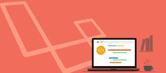

ADVANCED PROGRAMMING PRACTICE


What are Paradigms?
Paradigm can also be termed as method to solve some problem or do some task.
Programming paradigm is an approach to solve problem using
some programming language or also we can say it is a method to solve a problem using
tools and techniques that are available to us following some approach.
There are lots for programming language that are known but all of them need to follow some
strategy when the are implemented and thismethodology/strategy is paradigms.
Apart from varieties of programming language there are lots of paradigms
to fulfil each and every demand. They are discussed below: